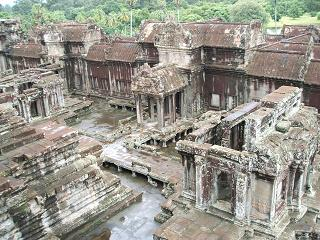

My first travel abroad。９/１１〜９/１７
今回はテキスト形式（文章）ではなく
アルバムのように画像を一覧表示で展示する形をとりました。
画像がたくさんあって重たいかもしれませんがこれでも
載せる画像をけっこう選びました。
これを見てタイ・カンボジアに行きたいと思ってくれるとうれしいです。
初めての海外旅行、しかも英語圏じゃないアジアへの旅行。
言語の壁、文化の壁と日本の中じゃ経験できないことをたくさんしました。
つらいと思うことも少しはあったけど
そこでしか見ること、感じることができないものは
それ以上にたくさんあったわけで。
それをこれらの写真から少しでも感じ取ってくれたら
もう言うことはなにもありません。
海外旅行〜タイ・カンボジア〜
アルバムのように画像を一覧表示で展示する形をとりました。
画像がたくさんあって重たいかもしれませんがこれでも
載せる画像をけっこう選びました。
これを見てタイ・カンボジアに行きたいと思ってくれるとうれしいです。
初めての海外旅行、しかも英語圏じゃないアジアへの旅行。
言語の壁、文化の壁と日本の中じゃ経験できないことをたくさんしました。
つらいと思うことも少しはあったけど
そこでしか見ること、感じることができないものは
それ以上にたくさんあったわけで。
それをこれらの写真から少しでも感じ取ってくれたら
もう言うことはなにもありません。
| 関西国際空港 | バンコク空港最寄駅ドン・ムアン駅 |
| ホアランポーン駅（俗に言うバンコク駅） | タイの寺院：ワットラチャナダ１ |
| タイの寺院：ワットラチャナダ２ | 猫 |
| タイの３輪タクシー：トゥクトゥク | 駅で食べた何か・・３５バーツ |
| ココナッツアイス | グリーンカレー |
| 民主記念塔 | 国境へ向かう電車から |
 |
| 電車で仲良くなったタイの女の子たち | とある駅 |
| 国境の町：アランヤプラテート | border |
| 草原 | ガソリンスタンド |
| 鉄橋 | ホテル |
| Bayon in Angkor Tom | Face |
| Preah Khan1 | Preah Khan 2 |
| Taprohm1 | Taprohm2 |
| Preah Palilay1 | Preah Palilay2 |
| Road | Neak Pean |
| Angkor Wat1 | Angkor Wat2 |
| Angkor Wat3 | Angkor Wat4 |
|  |
| Night Hotel1 | Night Hotel2 |
| Rambutan１ | Rambutan２ |
| flat tire | route 6 |
 |
戻る